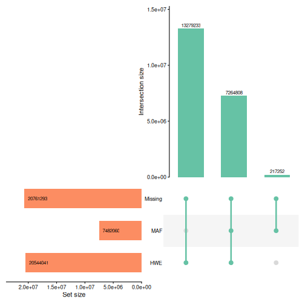
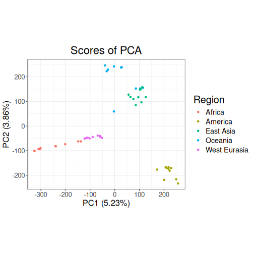
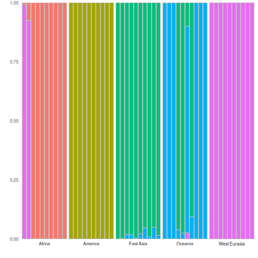
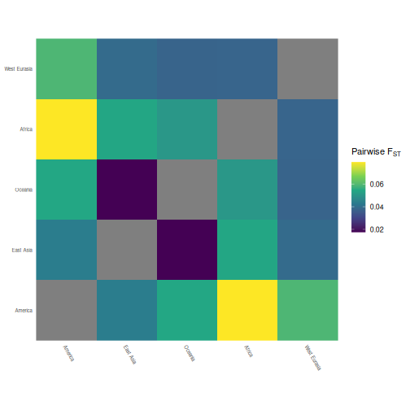

This vignette will demonstrate how to work with large datasets in tidypopgen.
This includes whole-genome data. Note that tidypopgen only handles variant sites, so if you are using a whole-genome dataset make sure it has been previously subsetted to variant sites only. Think very carefully before merging this kind of data during your pipeline!
The latest version of tidypopgen has implemented a new option to
minimise the memory footprint of very large datasets. As a large chunk
of memory is occupied by loci names, the gen_tibble()
function now offers the user the option to switch loci names from
character strings to integers, reducing the memory used by the
gen_tibble object.
Getting the data
Downloading the SGDP data
We will demonstrate the new capacity of tidypopgen using a subset of
the Simons
Genome Diversity Project (SGDP), containing 10 individuals each from
Africa, Oceania, America, West Eurasia and East Asia. The data are too
large to download as part of this article, but the scripts in the data-raw/sgdp
folder of the tidypopgen repository let you create the dataset
yourself if you wish to follow along.
The 50 individuals are listed in the files
afr_subset.txt, oceania_subset.txt,
america_subset.txt, west_eur_subset.txt and
east_asia_subset.txt. These were created by
s01_create_sgdp_subset_metadata.R, which takes the first 10
fully public individuals from each region in the SGDP metadata.
SGDP provides a VCF for each individual, but distributes them as a
single 57 GB archive containing all 279 public individuals. The shell
script s02_create_sgdp_subset.sh downloads only the parts
of the archive that hold our 50 individuals (about 10.8 GB), checks them
against the checksums provided by SGDP, and merges them into a single
VCF, all_subset.vcf.gz, with bcftools. You will need
bcftools and curl installed and available on
your PATH. From the root of a copy of the tidypopgen
repository, run:
This writes all_subset.vcf.gz and its index to
vignettes/articles/data/sgdp/, which is where we read it
from below (the paths in this article are relative to
vignettes/articles/). The individual VCFs are kept in
vignettes/articles/data/sgdp/sgdp_vcfs/, so that an
interrupted download can be resumed by running the script again; once
the merged VCF has been created, they can be deleted.
Note that each SGDP VCF only contains the sites at which that
individual carries a non-reference allele. When merging, a site that is
absent from an individual’s VCF is therefore set to homozygous for the
reference allele (with the --missing-to-ref option of
bcftools merge). Without this option, every homozygous
reference genotype would be recorded as missing. The cost is that a site
that was not sequenced in an individual is also set to homozygous
reference, which is a reasonable approximation for these high-coverage
genomes.
Reading a large VCF into a gen_tibble
Now that we have our data we can begin by loading the necessary libraries:
library(tidypopgen)
#> Loading required package: dplyr
#>
#> Attaching package: 'dplyr'
#> The following objects are masked from 'package:stats':
#>
#> filter, lag
#> The following objects are masked from 'package:base':
#>
#> intersect, setdiff, setequal, union
#> Loading required package: tibble
library(ggplot2)In many descriptive population genetic analyses, where the end goal
is to visualise populations (e.g., PCA) or calculate a summary statistic
(e.g. FST), the names of your loci are not needed for the
analysis. In these cases, we can save a lot of memory (over half of the
memory footprint of the gen_tibble) by switching the loci
names from strings to integers.
This option is only enabled when loading from a .vcf file. To do
this, we need to set parameter names_as_int to TRUE when
creating the gen_tibble:
sgdp <-
gen_tibble("data/sgdp/all_subset.vcf.gz",
quiet = TRUE,
backingfile = "data/sgdp/all_subset",
names_as_int = TRUE
)When we now call our loci tibble with show_loci(), we
can see that the loci names are now integers:
show_loci(sgdp)
#> # A tibble: 20,728,532 × 7
#> big_index name chromosome position genetic_dist allele_ref allele_alt
#> <int> <int> <fct> <int> <dbl> <chr> <chr>
#> 1 1 1 1 10109 0 A T
#> 2 2 2 1 10177 0 A C
#> 3 3 3 1 10180 0 T C
#> 4 4 4 1 10231 0 C A
#> 5 5 5 1 10234 0 C G
#> 6 6 6 1 10241 0 T A
#> 7 7 7 1 10248 0 A T
#> 8 8 8 1 10250 0 A C
#> 9 9 9 1 10255 0 A T
#> 10 10 10 1 10257 0 A C
#> # ℹ 20,728,522 more rowsThe rsID’s of each SNP have been removed, but all other metadata (chromosome, position, genetic distance, and alleles) are retained. We can check the memory footprint of the gen_tibble using:
format(object.size(sgdp), units = "auto", digits = 2)
#> [1] "790.76 Mb"Setting up cores
Because tidypopgen utilizes disk storage through file-backed matrices (FBM), we can run the following pipeline on a modern laptop without running out of RAM. Here, we use a machine with a GenuineIntel, 13th Gen Intel(R) Core(TM) i9-13900, 24 CPU and 126 GiB of RAM.
Before we begin, we will limit the number of cores used by the
parallelised BLAS library with
bigparallelr::set_blas_ncores(), and by the package
data.table with data.table::setDTthreads(). Note
You may need to adjust n_cores according to your own
hardware.
n_cores <- 20
data.table::setDTthreads(n_cores)
bigparallelr::set_blas_ncores(n_cores)Quality control for large datasets
Individual and loci reports
All the normal functionality of tidypopgen is preserved, as our
qc_report functions exemplify:
sgdp_indiv_rep <- qc_report_indiv(sgdp)indiv_report: 537ms
sgdp <- sgdp %>% group_by(Region)
sgdp_loci_rep <- qc_report_loci(sgdp)
sgdp <- sgdp %>% ungroup()loci_report: 406ms
However, it is important to be mindful that analyses on very large datasets will produce large outputs:
format(object.size(sgdp_loci_rep), units = "auto", digits = 2)
#> [1] "553.51 Mb"In this case, a loci report on 20728532 loci for 50 individuals occupies approximately 553.51 Mb of memory.
Let’s plot the overview of the loci report:
autoplot(sgdp_loci_rep,
maf_threshold = 0.05,
miss_threshold = 0.05
)
We can see from the Upset plot above that MAF filtering will remove a large number of loci. WGS data require heavy filtering for MAF to avoid including uninformative loci in analyses (e.g. sequencing errors or private mutations).
On the other hand, no loci fail the missingness threshold. Because sites absent from an individual’s VCF were set to homozygous reference when we merged the VCFs, there are no missing genotypes in this dataset. We can check the number of loci with any missing genotypes:
sum(sgdp_loci_rep$missingness > 0)
#> [1] 0When objects are no longer needed, or once results outputs have been
saved, we can remove them using rm() to keep memory usage
under control:
rm(sgdp_loci_rep)Filtering
We can then proceed with basic data filtering in the same way as working with any other gen_tibble object.
We filter for minor allele frequency, choosing to select loci with MAF greater than 5%:
sgdp <- sgdp %>%
select_loci_if(loci_maf(genotypes) > 0.05)
cat("Loci remaining:", count_loci(sgdp))
#> Loci remaining: 7456643maf_filter: 463ms
With other datasets, we would also remove loci with too many missing
genotypes (e.g. with
select_loci_if(loci_missingness(genotypes) < 0.1)), and
then impute the remaining missing genotypes with
gt_impute_simple(), as LD clumping and PCA do not accept
missing values. Our dataset has no missing genotypes, so we can skip
both steps.
Updating the backing file
After removing loci, we update the file backing matrix with
gt_update_backingfile(), so that it only contains the loci
that we kept:
sgdp <- gt_update_backingfile(sgdp, quiet = TRUE,
backingfile = tempfile())update_backingfile: 6.1s
This will help us with the next step (LD clumping).
LD clumping
Then we can LD clump the dataset to remove loci in linkage disequilibrium.
With many loci, this step can be a little more time consuming, so it
is important to remember to specify the n_cores parameter
to speed things up:
sgdp <- sgdp %>%
select_loci_if(loci_ld_clump(genotypes,
n_cores = n_cores,
thr_r2 = 0.2
))
cat("Loci remaining:", count_loci(sgdp))
#> Loci remaining: 507481ld_clump: 7.9s
Analysis
PCA
Now that we have a clean dataset, we can proceed with our analysis by plotting a PCA:
sgdp_pca <- sgdp %>% gt_pca_partialSVD()pca: 612ms

Our PCA separates the five regions. PC1 (5.23% of the variance) runs from the African individuals on the left, through West Eurasia, Oceania and East Asia, to the American individuals on the right, and PC2 (3.86%) separates the Oceanian and East Asian individuals at the top from the American individuals at the bottom. The individuals from America, West Eurasia and East Asia form fairly tight clusters, whereas the African individuals are spread out along PC1: the Mbuti, Ju/’hoan North, Yoruba, Mandenka and Dinka individuals are on the far left, followed by the Masai and Somali individuals from East Africa, while the two Mozabite individuals from Algeria lie close to the West Eurasian cluster. This is consistent with North and East African populations carrying some West Eurasian-related ancestry. The Oceanian individuals are also spread out: the Papuan, Bougainville and Australian individuals are at the top, the Maori individual is closer to the centre of the plot, and the Hawaiian individual and the two Dusun individuals (from Borneo) lie within the East Asian cluster. This reflects the Austronesian ancestry of these populations, which is largely related to East Asian populations.
DAPC
We can also perform a discriminant analysis of principal components
(DAPC) using gt_dapc.
dapc: 29ms
autoplot(sgdp_dapc, type = "components")
Our DAPC autoplot shows that most individuals are assigned to their own region’s group with a probability close to one, showing that there is genetic differentiation between the continental regions. The exceptions are consistent with the PCA above: the two Mozabite individuals are assigned to the West Eurasian group (with probabilities of 0.93 and 0.99), the two Dusun individuals and the Hawaiian individual are assigned to the East Asian group (with probabilities of 0.96, 0.98 and 0.91), and the Maori individual has a probability of 0.10 of East Asian membership. These individuals may have admixed ancestry, or (as for the Dusun) be closer to the East Asian populations than to the other Oceanian populations in our sample.
Pairwise FST
Finally, to examine the differentiation between regions, we can calculate pairwise FST.
grouped_sgdp <- sgdp %>% group_by(Region)
pairwise_fst <- grouped_sgdp %>% pairwise_pop_fst(
n_cores = n_cores,
type = "pairwise"
)
autoplot(pairwise_fst,
order = function(x) {
stats::hclust(stats::as.dist(x), method = "complete")
}
) +
scale_fill_viridis_c() +
theme(
axis.text.x = element_text(angle = -60, hjust = 0, size = 6),
axis.text.y = element_text(angle = 0, hjust = 1, size = 6)
) +
labs(
x = element_blank(),
y = element_blank(),
fill = expression("Pairwise F"[ST])
)
pairwise_fst: 188msThe pairwise FST values are all small (between 0.02 and 0.08), as is typical of human populations. America is the most differentiated region, and Africa and America are the most differentiated pair (FST = 0.079); America is closest to East Asia (0.043). East Asia and Oceania are the least differentiated pair (0.017), reflecting the East Asian-related ancestry of the Dusun, Hawaiian and Maori individuals in our Oceanian sample. Africa is closest to West Eurasia (0.038), which partly reflects the West Eurasian-related ancestry of the Mozabite, Somali and Masai individuals in our African sample. Note that with only 10 individuals per region, these estimates are imprecise.
Performance summary
Here is a summary of the time taken (in seconds) to perform each step using a large dataset:
#> step time
#> 1 indiv_report 0.54
#> 2 loci_report 0.41
#> 3 maf_filter 0.46
#> 4 update_backingfile 6.06
#> 5 ld_clump 7.86
#> 6 pca 0.61
#> 7 dapc 0.03
#> 8 pairwise_fst 0.19
#> 9 Total 16.16Key takeaways
-
Large data don’t need a large machine.
gen_tibbleobjects are file-backed, so the genotypes stay on disk and only what you are working on is held in memory. -
Use
names_as_int = TRUEwhen reading a VCF to reduce the memory taken by locus names. The trade-off is that the original locus IDs are not kept (chromosome and position are), sorbind()matches loci by chromosome and position. -
Set your cores. Limit BLAS and
data.tablethreads at the start, and passn_coresto the functions that support it (e.g. LD clumping and FST). -
Large analyses make large outputs. Reports such as
qc_report_loci()can be big, so save what you need andrm()the rest.